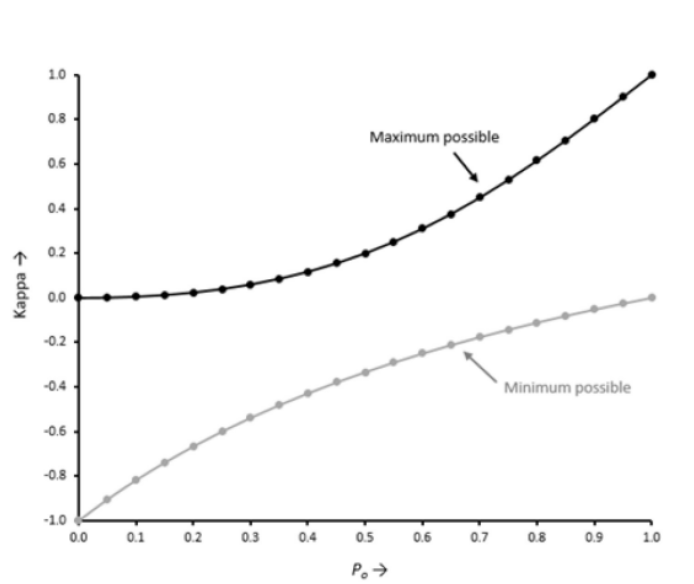
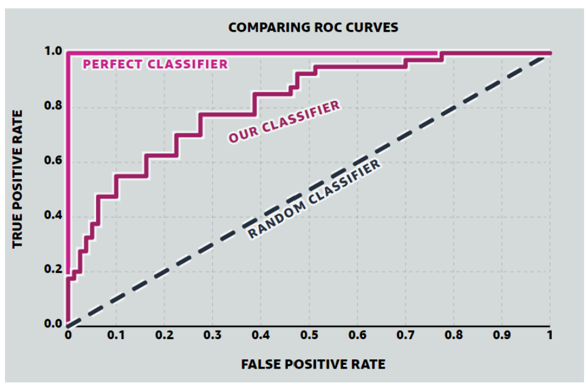

7 Week 7: Classification 2
This is the learning diary for week seven, about further approach of classification and the method to test the accuracy of classification.
7.1 Summary
7.1.1 Landcover classification
- Object based image analysis
consider shapes based on the similarity (homogeneity) or difference (heterogeneity) of the cells = superpixels
Method for Superpixel generation: SLIC (Simple Linear Iterative Clustering), based on the colour difference to the centre point (homogenity of colours)
advanced package: SegOptim
- Sub pixel analysis
Spectral Mixture Analysis (SMA): determines the proportion or abundance of landcover per pixel
package: MESMA (Multiple endmember spectral analysis) from RStoolbox
Number of End members
simplify the process and use the V-I-S model in urban areas: Vegetation-Impervious surface-Soil (V-I-S) fractions
each cover type can only has one end member
7.1.2 Accuracy assessment
- Binary confusion matrix
PA: Producer accuracy (recall or true positive rate or sensitivity)
defined as the fraction of correctly classified pixels (TP) compared to ground truth data (TP+FN)
\(\frac{TP}{TP+FN}\)
UA: User accuracy (consumer’s accuracy or precision or positive predictive value)
defined as the fraction of correctly classified pixels (TP) relative to all others classified as a particular land cover(TP+FP)
\(\frac{TP}{TP+FP}\)
OA: the (overall) accuracy
represents the combined fraction of correctly classified pixels (TP +TN) across all land cover types (TP+FP+FN+TN)
\(\frac{TP+TN}{TP+FP+FN+TN}\)
Where model is correct
True positive = model predicts positive class correctly
True negative = model predicts negative class correctly
Where model is incorrect
False positive = model predicts positive, but it is negative
False negative = model predicts negative, but it is positive
Errors of omission: Landcover omitted from correct class (100 - PA)
Errors of commission: Classified sites for incorrect classifications (100 - UA)
- Kappa coefficient
Designed to express the accuracy of an image compared to the results by chance
Ranges from 0 to 1

- F1 score
combines both recall (Producer accuracy) and Precision (User accuracy)
\(F1=\frac{TP}{TP+1/2*(FP+FN)}\)
Ranges from 0 to 1, where 1 is better performance
- Receiver Operating Characteristic Curve
True Positive rate: probability that a positive sample is correctly predicted in the positive class - planes predicted to be planes
- \(\frac{TP}{TP+FN}\), equal to PA
False positive rate: probability that a negative sample is incorrectly predicted in the positive class - predicted planes but are clouds
- \(\frac{FP}{FP+TN}\)
Maximise true positives (1) and minimise false positives (0)

- Area Under the ROC Curve:probability that the model will rank a randomly chosen positive example more highly than a randomly chosen negative example.
- Spatial cross validation - need to consider spatial autocorrelation
spatially partition the folded data, folds are from cross validation
by controlling with C parameter, permit misclassifications and then avoid overfit (see Figure 6.2 in Chapter 6)
- Gamma: controls the influence of a training point within the classified data - low gamma = big radius, large gamma = low radius
7.2 Application
Ghasemi, Karimzadeh, and Feizizadeh (2021) used radar Sentinel-1 images with polarization VV and VH for the land classification in Tabriz. Sentinel-2 images for the same time were applied as a reference for the calibration and accuracy assessment. Maximum likelihood (ML) and support vector machine (SVM) algorithms were employed for supervised classification, kappa coefficient was used to assess the accuracy.
7.2.1 Data and Methodology
- Data
Both Sentinel-2 (optical) and Sentinel-1 (radar) images were used for texture analysis. Sentinel-2 images are of MSI-2 type and were subjected to preprocessing. Sentinel-1 images, with single look complex (SLC) format, are of IW (interferometric wide) sensor mode.
- Methodology
After data processing, there are three main stage. For the third stage - Supervised Classification - two classification methods were applied and then use kappa coefficient to test the accuracy.
7.2.2 Result
The results showed that the use of radar images only with backscattering intensity resulted in poor performance while using the gray-level co-occurrence matrix (GLCM) of texture features increased the accuracy.
- Classification and accuracy assessment for Sentinel-2 image
The transmitted frequencies of radar images have different redistributions to different phenomena. The numerical results obtained from the radar image classification show that using only the radar image redistribution led to low accuracies at both VV and VH polarization, but the use of the textural analysis significantly increased the accuracy of the classifications.
- Classification and accuracy assessment for Sentinel-1 image
The statistical results obtained from the ML and SVM classifications for radar images at VV and VH polarization indicated that the latter performed better than the former. When texture analysis was not used in the classes, the classification accuracy was low with kappa values of 0.37 and 0.42 for VV and VH polarization, respectively.
The use of texture analysis and obtaining the optimum window size is increase the classification accuracy with a better performance for VH polarization. The SVM classification method with a kappa coefficient of 0.72% showed better performance than the ML one with a kappa coefficient of 0.61%. Conclusively, in the absence of Sentinel-2 datasets, Sentinel-1 images are good alternatives if the preserved texture information is available for the land cover classification.
- Kappa coefficient
7.3 Reflection
The content in this week is so complicated and massive!
However, accuracy assessment is a critical step in remote sensing image classification, as it allows us to evaluate how well the classification model performs in distinguishing different land covers or features. The accuracy of the classification results depends on various factors, such as the quality and resolution of the remote sensing data, the classification algorithm used (see both application in Section 6.2 and Section 7.2), the number and quality of the training samples, and the classification scheme used.
It’s essential to perform accuracy assessment to ensure that the classification results are reliable and accurate. This information is critical for making informed decisions in various fields such as environmental monitoring, land management, and urban planning.
In Section 6.2 of Chapter 6, we recognised that each method of classification has its own advantage and disadvantage, although it just assessed the accuracy qualitatively and manually. And in Section 7.2, we can find out the accuracy quantitatively with different methods and different data.